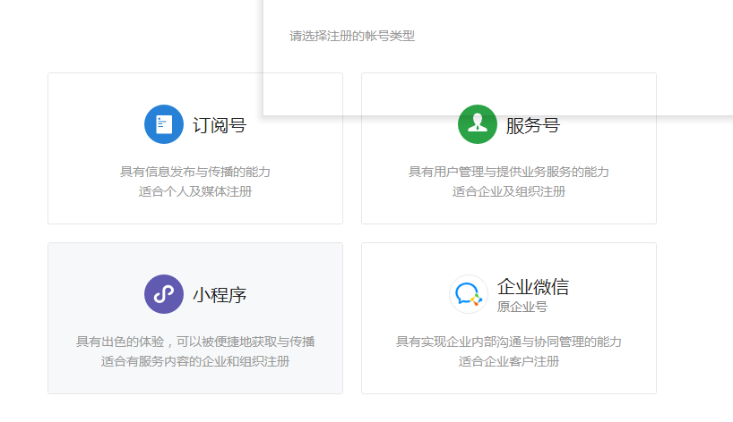
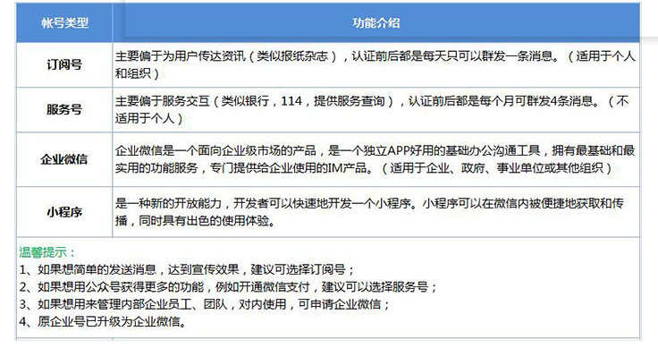
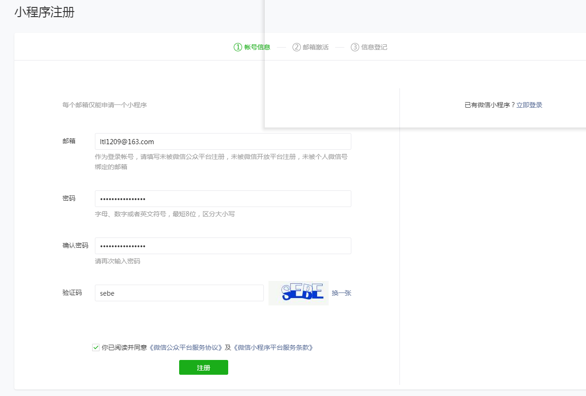
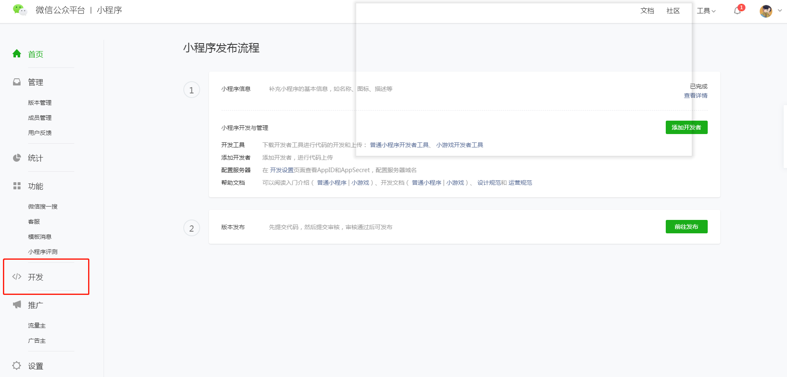
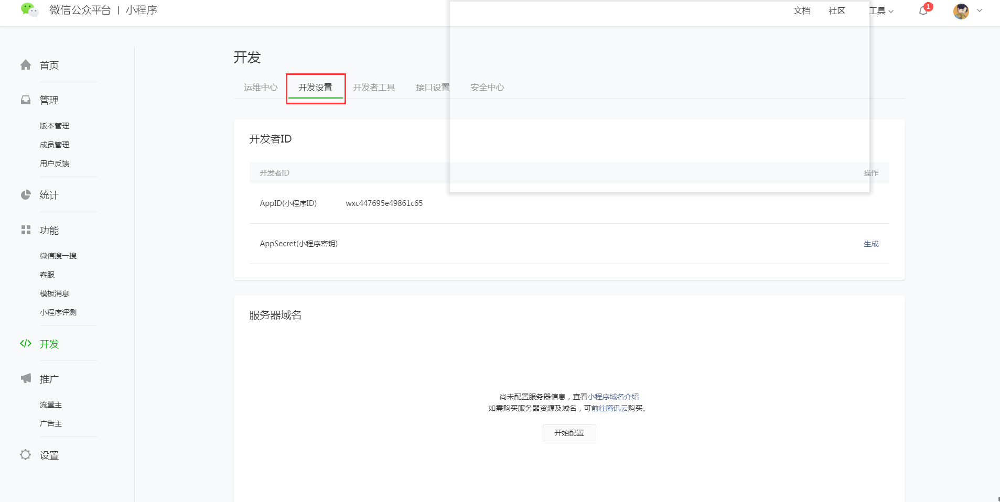
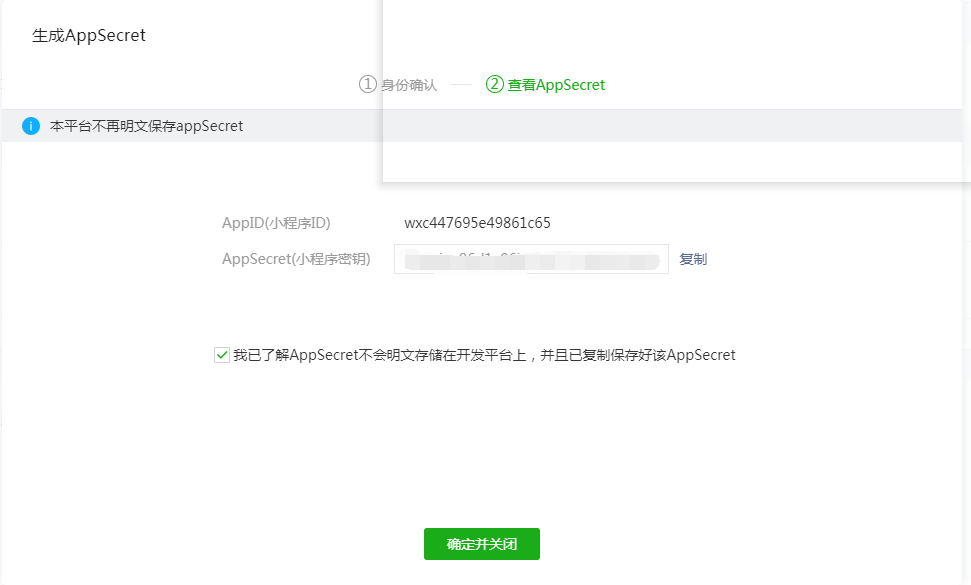

浏览器搜索“微信公众平台”,进入官网，点右上角立即注册。
注册前需要选择一个账号类型，共有4个账号类型可以选择，每种类型能提供不同的功能，功能区别见下图。选择一个适合的类型开始注册（楼主大学期间写微信文案已注册了一个订阅号，前期自学小程序，又注册了一个小程序，又一个邮箱注册了微信开放平台，所以下面的注册就不一步一步演示啦，相信大家都会。ps:账号类型并不能修改，只有一个邮箱的童鞋要慎重选择！）。
根据“账号信息——邮箱激活——信息登记”一步一步来操作，直到注册完成。
注册完成之后进入首页，选择左菜单栏的“开发”一栏;

再选择“开发设置”;
此时可以看到AppID，AppSecret需要点击后面的“生成”按钮生成（注意：1.生成AppSecret后不要急于关闭弹窗，先把生成的AppSecret保存到记事本;2.再次点击“生成”按钮时AppSecret值会改变，使用时需要替换之前生成的AppSecret）。
虽然微信公众平台注册步骤简单，但是使用率很高。希望随笔能给尚未注册过的童鞋一丢丢帮助。